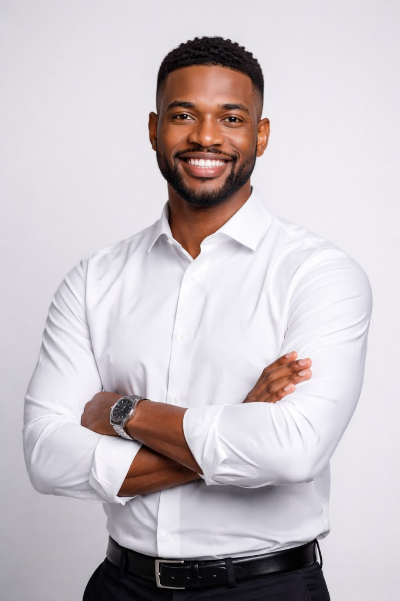
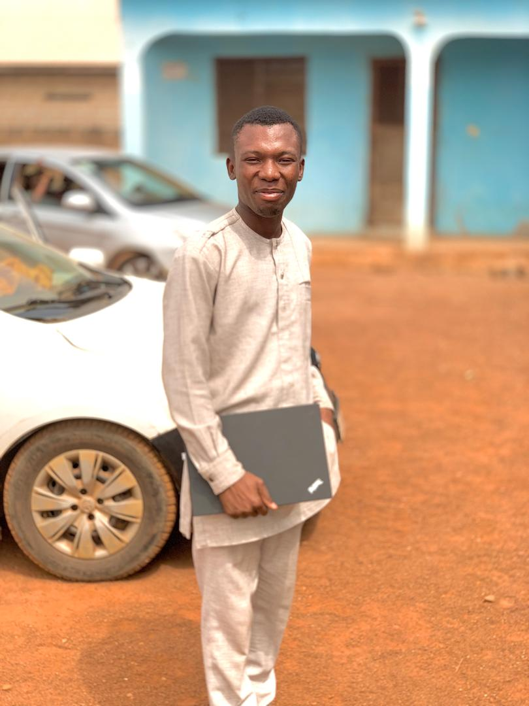

Learn about the heart behind HopeLink Foundation, our visionaries, our mission, and the lives we continue to impact across Ghana.
Founded in Tamale in the Northern Region of Ghana, HopeLink Foundation began as a small group of volunteers who believed that every child deserves quality education, every family deserves healthcare, and every community deserves hope.
Through commitment, partnership, and compassion, our organization has expanded across several communities, providing scholarships, medical outreach, clean water initiatives, skills training, and volunteer opportunities.
"True community development begins when people are empowered with knowledge, opportunity, and hope."
— Dennis Danladi Kine

Every milestone represents another step toward transforming lives and strengthening communities.
HopeLink Foundation started as a small volunteer initiative supporting children through educational mentoring, school supplies, and youth development activities.
Medical professionals joined our mission, allowing us to organize free health screenings, community education, and sanitation campaigns.
HopeLink became a registered non-governmental organization, expanding partnerships with volunteers, organizations, and donors across Ghana.
Launch of the HopeLink digital platform, making volunteer registration, donation tracking, and project management faster and more transparent.
Dedicated professionals working together to build stronger communities.

HopeLink Foundation is committed to improving the quality of life of vulnerable individuals and communities by promoting access to quality education, healthcare, clean water, youth empowerment, and sustainable community development. Through partnerships, volunteerism, and innovation, we strive to create opportunities that inspire hope and lasting positive change across Ghana.
The principles that guide every project we undertake.
HopeLink Foundation exists to improve lives through quality education, accessible healthcare, community empowerment, clean water initiatives, and sustainable development programmes across Ghana.
To build healthy, educated, and empowered communities where everyone has equal opportunities to succeed and live with dignity.
Integrity
Compassion
Transparency
Innovation
Teamwork
Community Service
Every number represents lives touched through our projects.
People Reached
Volunteers
Communities Served
Projects Completed
Together we can transform lives, empower communities, and build a brighter future for generations to come.